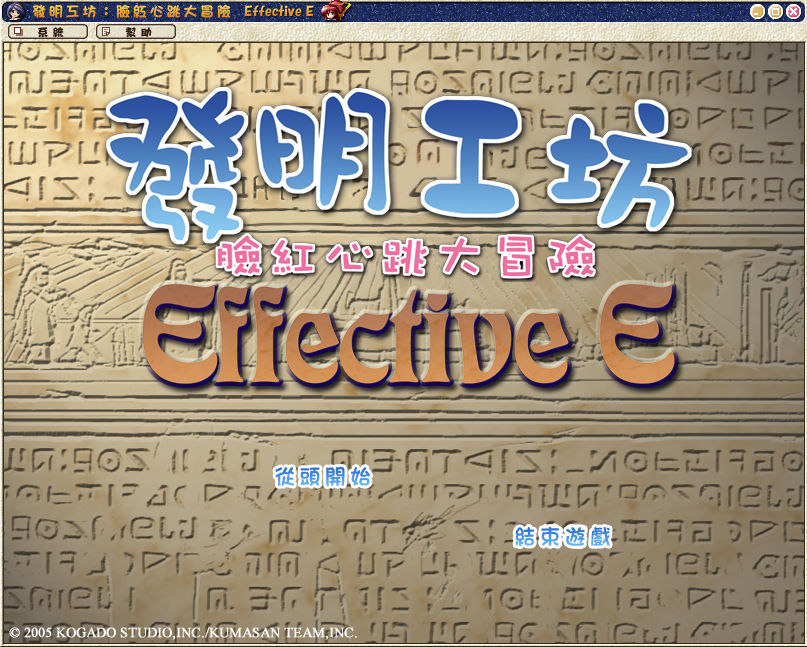
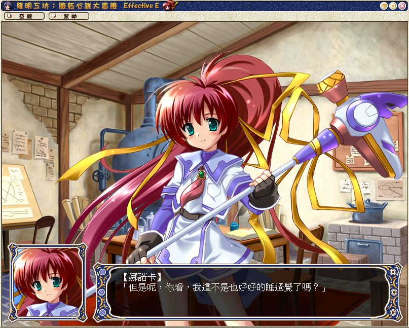

名稱：發明工坊2外傳：臉紅心跳大冒險／天空之城的冒險之旅 (Effective E，繁中／簡中版)
簡介：工畫堂 2005年出品的冒險劇情故事遊戲，2008年由松崗中文化並代理發行。劇情故事
之間有添加一些小遊戲 [待補]。


保護：繁中版為光碟SecuROM 7.38，需使用YASU屏蔽工具，或使用SRLoader啟動（勾選繞過
遊戲自校驗）
備註：遊戲過程如果發生問題，詢問是否回報時，不理它，繼續玩遊戲即可。
檔案：nda-sc.rar = 簡中版（已免光碟，免光碟檔無法用在繁中版）
操作：Enter = 快速略過劇情